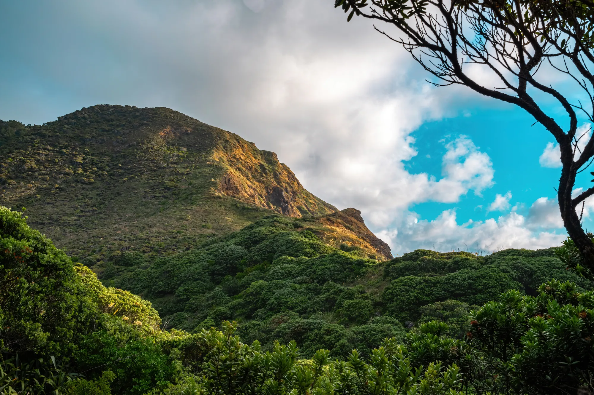
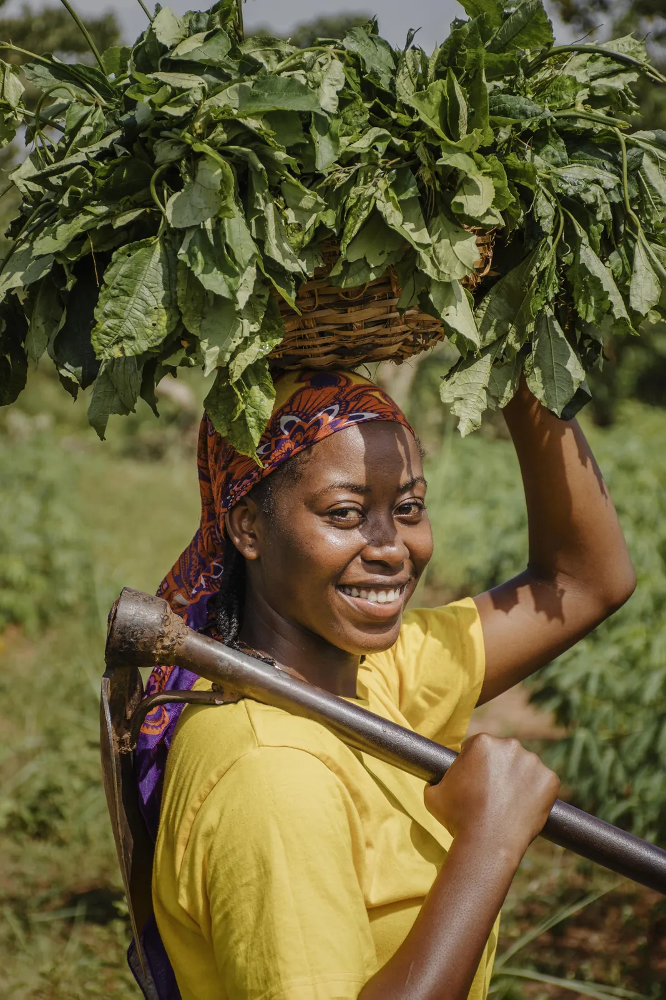

Rooted in the highlands.
Growing together.
Meet our roots
Many landscapes.
One shared story.
Our story is grounded in the coffee-growing communities of East Africa. On the slopes of Mount Elgon, rich volcanic soils, elevation, and careful cultivation shape Arabica with a sense of place you can taste.
Our connections also reach across the border to Eastern DRC, another part of this remarkable coffee region. We celebrate these origins with respect for the farmers and communities whose knowledge and work bring each harvest to life.
Explore our coffeeWhen women farmers thrive, communities grow.
Coffee is built on generations of knowledge, and women are central to its future. Nganzi is woman-led, with a commitment to making women farmers more visible and creating room for their leadership, expertise, and ambition across the coffee value chain.
We believe ethical sourcing means building relationships, recognising the people behind the harvest, and working toward opportunities that support stronger livelihoods over time.
Start a conversation
A careful journey at every step.
At CURAD’s facilities at Kabanyoro Research Institute, each stage is part of a shared effort to handle coffee with care and bring out the best in every harvest.
-
01
Harvest
Farmers select ripe cherries at the heart of the harvest.
-
02
Sort & prepare
The coffee is carefully prepared for the next stage of processing.
-
03
Process & dry
CURAD’s facilities support the work of processing and drying the harvest.
-
04
Roast & share
Thoughtful roasting brings the coffee’s character into your cup.
Each harvest and processing method can differ; this is a glimpse of the journey, not a one-size-fits-all recipe.
Be part of the story
Good coffee brings us closer.
Discover our roasts or get in touch to learn more about Nganzi.